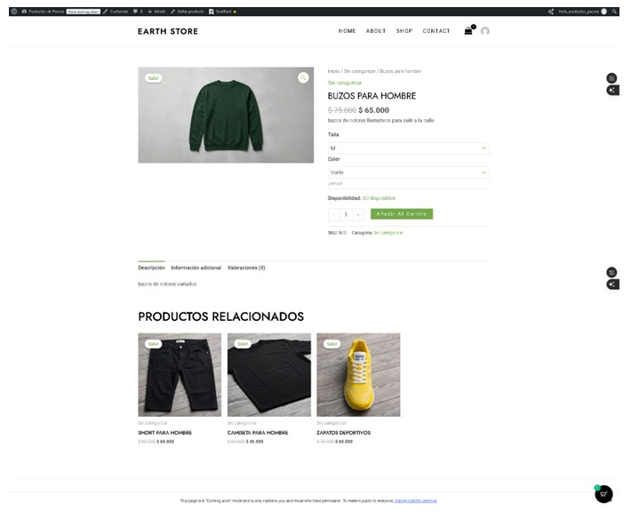
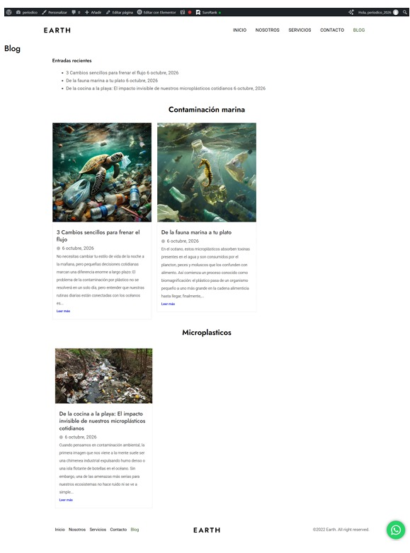
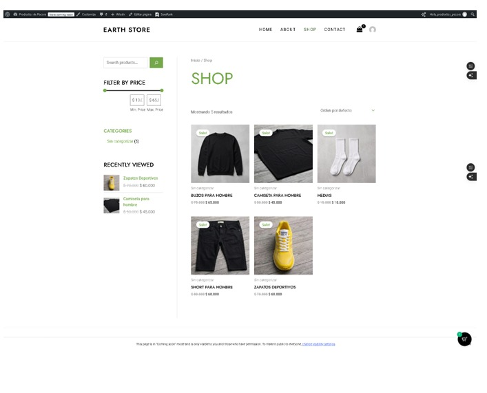

Tienda de ropa
Trabajo hecho desde Wordpress, se debian seguir ciertas
reglas, usar un tema y plugins dados por el profesor y editar los
productos, dando varias opciones de los productos y
cada uno con su propio costo.
Mis proyectos en esta pagina

Trabajo hecho desde Wordpress, se debian seguir ciertas
reglas, usar un tema y plugins dados por el profesor y editar los
productos, dando varias opciones de los productos y
cada uno con su propio costo.

Se hizo un periodico en Wordpress, donde se habla
acerca del calentamiento global y el medio ambiente. Se debian
poner minimo 6 noticias, 3 de cada categoria.

Un trabajo de universidad creado con wordpress, debia
ser acerca de una tienda de ropa, escogiendo un tema y editandolo
a nuestro gusto.